|
2010年しめくくりチャット・年越しチャットの記録 |
|
||
|
2010年しめくくりチャット・年越しチャットの記録 |
|
||
| 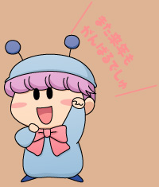 | |||
|
２０１０年１２月２５日（土） ２０：００〜２２：００に、毎年恒例の『しめくくりチャット』を開催しました。 今年は見事にクリスマスと重なり、クリスマスの話題もたくさん出てとても盛り上がりました。そして今回もたくさんの参加者・・・本当に感謝です(^^)。この勢いを来年も続けていきたいですね！ 大晦日の夜にも『年越しチャット』を開催しました。遅い時間とはいえ、たくさんの方にご参加いただき、とてもにぎやかなチャットとなりました。 それではチャットの模様をダイジェストでお伝えします。
(2011/1/3) |
|||
↓今回もたくさんの方にご参加いただきました！
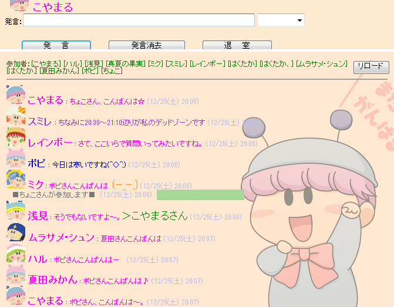
↓最初は質問コーナー！
クリスマスの過ごし方や、最近の好きなアニメやゲームの話題など。

↓なりきりチャットの担当決めです。
参加者が多いと希望がかぶるといううれしい悩みが。。
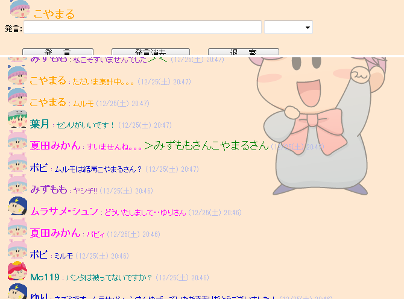
話し合いの上、何とか決まりました(^◇^;)
皆さんいろんなアドバイスをありがとうございました！
|
★出演者紹介（五十音順）★ アンリ（はくたかさん） |
|
〜今回のなりきりチャットのテーマ〜 今夜は楽しいクリスマスイブ。 〜設定〜 |
↓いよいよなりきりチャット開始です！
みんなでまずは小屋を目指しましょう！

↓いきなりミルモにむちゃぶりしちゃいました(^^;
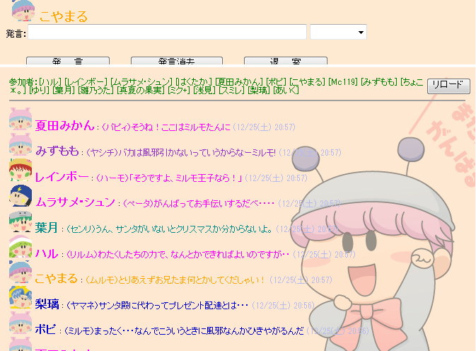
↓小屋にはなんと鍵がかかっていました！
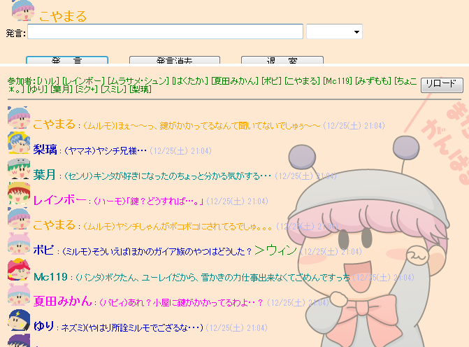
↓扉の鍵に対しては、魔法でも忍術でもなく、力尽くで(笑)
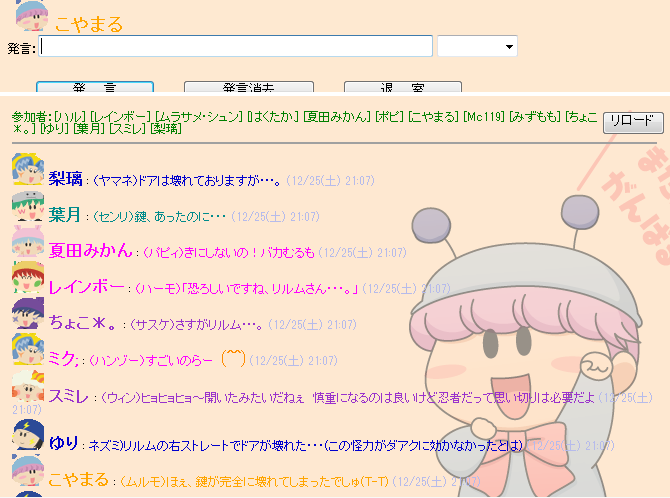
↓いろんな妖精にいろんな活躍や提案をしていただきました！
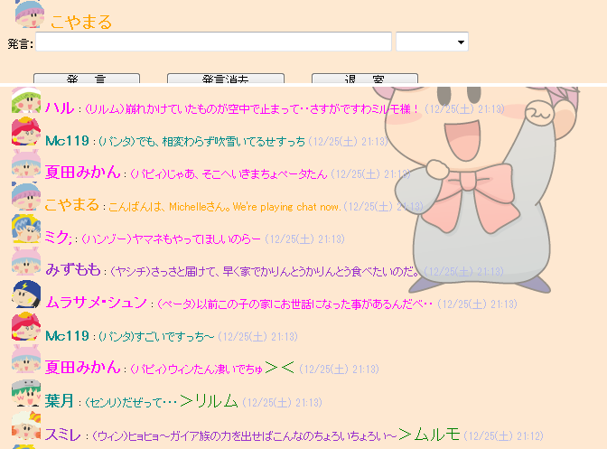
↓なりきりチャットのもう一つの目玉は、愛の駆け引きですね(笑)
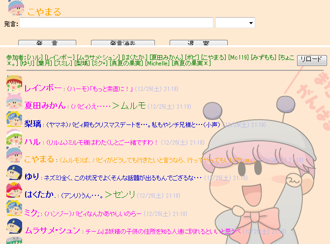
↓今回のリーダー賞は、トナカイとそりを用意したクモモさん（ミクさん）！
あとちょっとでプレゼントを配るところで、なりきりチャットは終了〜

↓今回のなりきりチャットの反省会〜
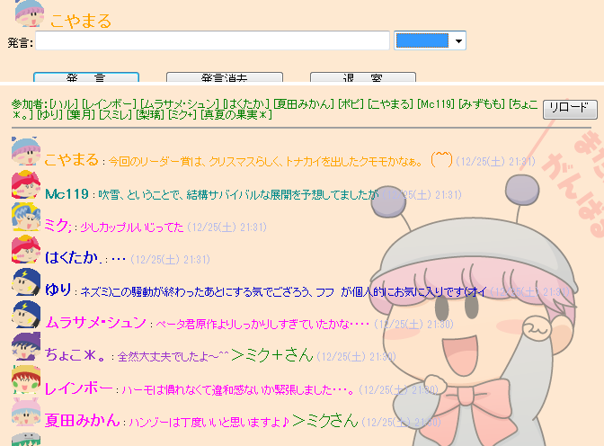
↓最後は、ゆりさんからのお題「ネズミのヤマネのほっぺのマークの違い」で
すごく熱い議論が交わされました！
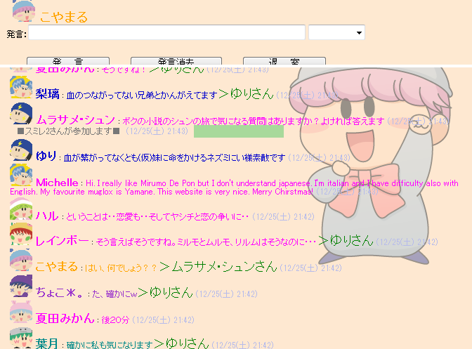
〜〜〜ここからは、年末に開催しました年越しチャットの模様です〜〜〜
↓新年まであと数分のところで2010年の振り返りを！
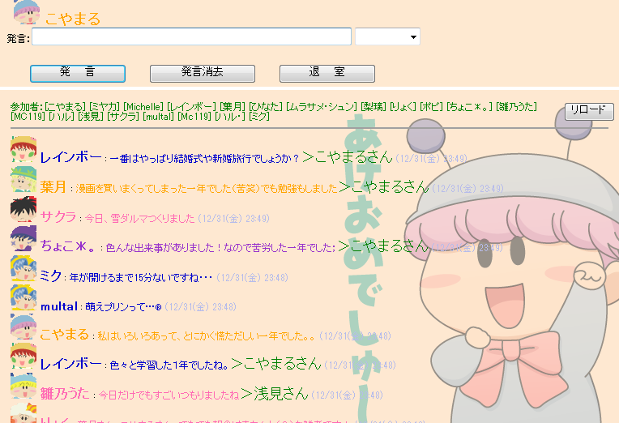
↓年末恒例の「なりきり挨拶」を今年も実施しました。
みんなのセリフがかわいい(^^)
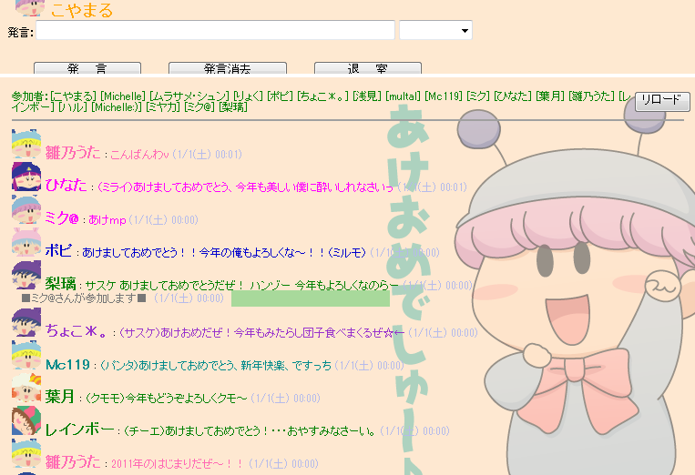
↓2011年の目標をみんなで語り合いました♪
皆さん、今年もがんばりましょう！
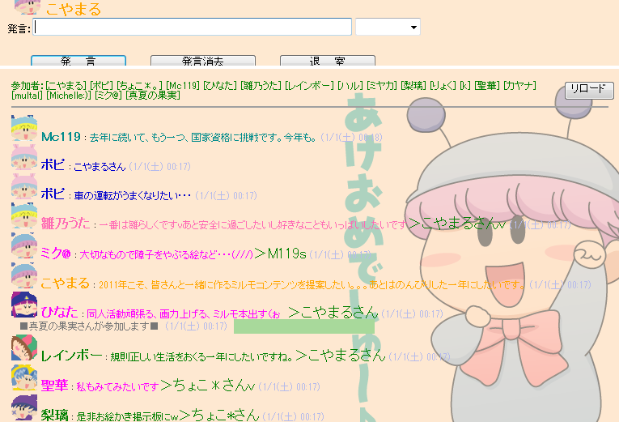
今回も皆さんのお力により、とても楽しいチャット会となりました。
次回のチャットは３月を予定していますので、またぜひお気軽に参加してくださいね。
 |